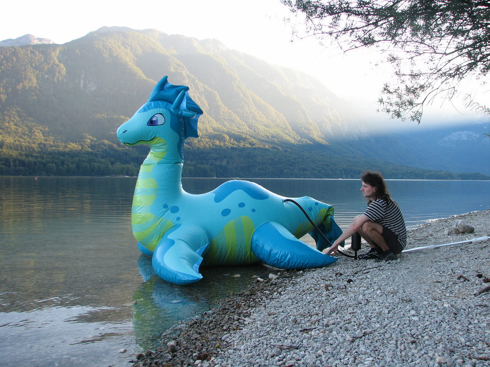

|  |
Moi c'est Nathalie! Je suis une grande serpent d'eau qui vivaient paisiblement dans un lac d'Ecosse. Seulement, ma grande taille fait que je n'étais pas discrète, beaucoup de touristes sont venus me voir et m'harceler, si bien que c'en était devenu insuportable pour moi et les autres poissons. Heureusement, aujourd'hui j'ai été recueillie par l'association, et je vis plus tranquillement. Sur la photo on peut voir le vétérinaire qui fait mon vaccin. Mais depuis tout ce temps je manque d'une famille pour s'occuper de moi. Je suis (un peu) encombrante, mais très joueuse, je sais par exemple jouer au balon avec des enfants. Je m'entends plutôt bien avec les autres animaux, mais j'ai tendance à ne plus leur laisser beaucoup d'espace. |